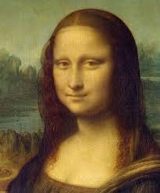

I'm a masterpiece of the Italian Renaissance. I'm from Florence, Italy. My favorite hobbies are Art, the Catholic church, and the cloth and silk business. My dream job is to be known for more than just a pretty smile. I live in the Louvre Museum, Paris. I want to be a web developer because I'm looking to join the 21st century.
My real name is Lisa Gherardini. I'm the wife of a Florentine cloth merchant named Francesco del Giocondo. We commissioned a painting by Leonardo da Vinci in 1503, but Leonardo took the completed portrait to France instead and it ended up in François I's collection.